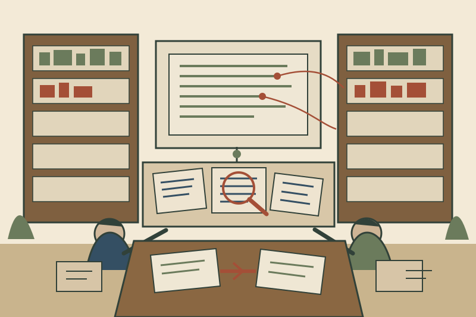

引用が正しそうかをLLMに聞くだけでは足りない——「人なら何を引用するか」まで探すCiteGuard
CiteGuard: Faithful Citation Attribution for LLMs via Retrieval-Augmented Validation

引用の評価は、「その論文はこの主張を支えているか」をLLMへ聞けば終わるように見える。CiteGuardの出発点は、その判定自体がかなり不安定だという観察である。著者らはcitation evaluationを、単なるentailment判定ではなく「同じ文章を書いた人間なら、どの文献を引用するか」というcitation attribution alignmentとして捉え直す。そして、評価するLLM自身に、周辺文脈を取りに行かせ、候補論文の本文を検索させ、必要なら別の妥当な引用まで探させる。
「引用が実在する」と「その場所で引用すべき」は別問題
科学文章の引用には少なくとも三つの段階がある。文献が実在すること。その文献に関連内容が書かれていること。そして、その文章のその主張を支えるcitationとして適切であることだ。最後の判定には、claimだけでなく前後の文脈や、候補論文の本文を読む必要がある。
著者らはCiteME benchmark上で、GPT-4oにcitation attributionを直接判定させると、明らかな誤引用は見つけられても、正しい引用をかなり落とすことを確認した。論文ではrecallが16〜17%まで下がる条件を示し、用語の小さな違いでも判定が崩れる例を挙げる。つまりLLM-as-a-Judgeを使えば自動化できるが、そのjudgeが必要な知識を持っているとは限らない。
CiteGuardは、judgeへ「調べる権限」を渡す
CiteGuardはretrieval-aware agentとして動く。titleやabstractから候補を検索するだけでなく、対象claimの前後を追加で読む、特定paperの全文から語句を探す、snippet検索をする、といったactionを持つ。候補paperを一つ選んだ後はそれを除外して再検索し、複数の適切なreferenceを提案することもできる。
この設計のポイントは、評価対象の文章とreference pairをjudgeへ一度に渡して「○か×か」と聞かないことだ。判定に不足している情報を、judge自身が検索行動で補う。評価器を小さなresearch agentにしている。
評価基準を「oracle citationとの一致」から少し広げる
citation benchmarkには厄介な問題がある。元の著者がcitation Aを使っていても、同じ主張を十分支えるcitation Bが存在することがある。そのときBを出したsystemを単純なexact matchで誤りにすると、citation selectionの能力を過小評価する。
CiteGuardはhuman annotationを使い、提案したalternative citationも妥当かを調べる。論文がいうattribution alignmentは、「元のcitation IDを当てるゲーム」より、人間がその文章へreferenceを付ける行為に近づけるための定義である。
この発想は法務RAGの評価にもそのまま移せる。gold判例と別の判例を出したから誤り、ではなく、問いに対して同じ法理をより直接支える一次資料なら正解候補になりうる。ただし、法的権威の上下、時点、管轄、先例価値のような追加条件は科学文献とは別に必要になる。
どのactionが効いたかまで切り分けている
CiteGuardはablationで、claimの周辺文脈を取得するactionと、paper本文から該当箇所を検索するactionを外して比較した。どちらもbaselineから改善し、特にpaper本文を検索できることの寄与が大きかった。両方を使うと最も高い精度になった。
さらに全文を丸ごとcontextへ入れる方式も比較している。full paperを読ませるとaccuracyは約3ポイント上がった一方、token消費は2倍、条件によっては4倍まで増えた。ここから「全文を入れればよい」と「必要箇所だけ取ればよい」の間に、精度と計算量のtrade-offがあることが見える。
68.1%という数字より、human 69.2%に近づけた方法を見る
CiteMEではCiteGuard+DeepSeek-R1が68.1% accuracy、humanが69.2%と報告される。GPT-4oをbackendにした場合も、先行のCiteAgentから約10 percentage points改善した。Easy、Medium、Medium-Hard、Hardへ分けると、難しいclaimほど差が残る。cross-domainのCiteMultiでは改善幅が小さくなり、著者らはdomain distributionやcitation styleの違いを理由候補に挙げている。
ここで重要なのは「agentにしたら人間並み」という一行ではない。直接判定で知識不足だったjudgeへ、追加文脈・検索・本文確認という行動を与えると改善したことだ。評価器の性能も、model単体ではなくinterfaceとevidence accessを含むsystem propertyとして考えられる。
反復検索には停止条件がいる
CiteGuardは同じcitationを除外しながら次の候補を探せる。複数runではaccuracyが継続的に改善するが、改善幅は逓減する。適切なcitationが一つしかない場合、既にそれを選んだ後は、action数を使い切っても次を無理に出さずrefuseする場合がある。
これはretrieval agent一般の停止問題と同じ構造を持つ。検索できるから続けるのではなく、新しい妥当なevidenceがまだありそうか、既存candidateと重複していないか、追加検索の期待利得があるかを見る必要がある。
法務AIへ移すと、「citation correctness」をさらに分けたくなる
法務回答のcitationには、実在性、該当箇所とのsemantic support、法的authority、時点適合性、管轄、射程、引用した命題との距離がある。CiteGuardの設計をそのまま使うより、このaction-oriented evaluationを法務向けに拡張する方が面白い。
例えばjudgeへ「前後の回答文を読む」「引用元の該当箇所を検索する」「上位法源を探す」「反対方向の資料を探す」「同じ命題を支えるalternative authorityを探す」というactionを与える。すると最終的な○×だけでなく、どの検証stepで不合格になったかがログとして残る。
さらにhuman groundingを残すなら、gold citationを一つに固定しない。Evidence Setを「この命題を支えうる資料集合」として持ち、同等以上のauthorityを持つalternativeを人間がacceptできる仕組みにする。これは評価の再現性と、検索システムの自由度の両方に関係する。
既存記事との違い
Hallucination-Free?は、実在するcitationが付いていても法的主張を支えない失敗を人手で分解した。CiteGuardは、そのsupport判定をどう自動化するかへ踏み込む。RAGCheckerがclaim単位でretrieval/generation failureを診断するのに対し、CiteGuardはcitationを選ぶ・検証するagentの行動設計が中心である。
Sensemakingともつながる。評価器自身が、手元のclaim-reference pairだけで判断せず、必要な文脈を集めて意味づけし、追加探索へ戻るからだ。
限界
実装はSemantic Scholar APIのcoverageと検索能力に依存する。著者らもこれを主要な限界に挙げ、ArXiv backendへの置換実験では使えるactionが減ることを示した。また、1B未満の小型open modelは未評価で、model size依存も残る。科学文献citationを対象とした研究なので、法的authorityの階層やjurisdictionは扱わない。
もう一つ、human 69.2%自体が「絶対正解」ではない点も重要だ。citation attributionは複数解があり、人間同士の判断にも幅がある。だからこそ、CiteGuardがalternative citationをhuman assessmentへ戻している。
考えるための問い
AI回答の根拠性を評価するとき、judgeには「回答と引用文」だけを見せていないだろうか。その判定に本来必要な検索行動を列挙すると、評価器はどんなtoolを持つべきだろう。